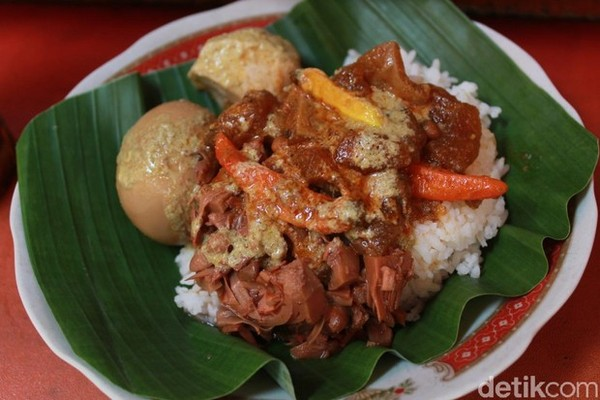

Resep Gudeg
Bahan:
- 1 kg nangka muda, potong kecil
- 500 ml santan kental
- 500 ml santan encer
- 5 lembar daun salam
- 3 cm lengkuas, memarkan
- 200 gram gula merah, serut halus
- Garam secukupnya
- Telur rebus (opsional)
Bumbu Halus:
- 6 siung bawang merah
- 5 siung bawang putih
- 1 sendok teh ketumbar
- 1 sendok teh biji kemiri
- 1 sendok teh kunyit bubuk
Cara Memasak:
- Cuci bersih nangka muda dan tiriskan.
- Rebus nangka muda dengan daun salam dan lengkuas hingga setengah matang, lalu tiriskan.
- Siapkan wajan besar, masukkan nangka muda, bumbu halus, daun salam, dan lengkuas. Aduk hingga rata.
- Tuang santan encer dan masak dengan api kecil hingga bumbu meresap.
- Tambahkan santan kental, gula merah, dan garam. Masak dengan api kecil sambil diaduk sesekali agar santan tidak pecah.
- Masukkan telur rebus jika digunakan. Masak hingga gudeg berubah warna kecokelatan dan kuah menyusut.
- Angkat dan sajikan gudeg bersama nasi putih, sambal goreng krecek, dan lauk pelengkap lainnya.